초록
자연어는 인간이 로봇에게 작업을 전달하는 가장 유연하고 직관적인 방법일 것이다. 모방 학습(imitation learning) 분야의 기존 연구들은 일반적으로 각 작업이 작업 ID나 목표 이미지로 지정되어야 하는데, 이는 열린 세계(open-world) 환경에서는 비실용적인 경우가 많다. 반면, 지시 수행(instruction following) 분야의 기존 접근법들은 에이전트의 행동이 언어에 의해 안내되도록 하지만, 대개 관측, 구동기 또는 언어의 구조화를 가정하므로 로봇 공학과 같은 복잡한 환경으로의 적용을 제한한다. 본 연구에서는 자유 형식의 자연어 조건화를 모방 학습에 통합하는 방법을 제시한다. 우리의 접근법은 픽셀로부터의 인지, 자연어 이해, 그리고 다중 작업 연속 제어(multitask continuous control)를 단일 신경망으로 종단간(end-to-end) 학습한다. 모방 학습의 기존 연구들과 달리, 우리의 방법은 라벨이 없고 비정형인 데모 데이터(즉, 작업이나 언어 라벨이 없는 데이터)를 통합할 수 있다. 우리는 이것이 언어 조건부 성능을 극적으로 향상시키는 동시에, 언어 주석(annotation) 비용을 전체 데이터의 1% 미만으로 줄여줌을 보여준다. 테스트 시점에, 우리의 방법으로 학습된 단일 언어 조건부 시각-운동 정책(visuomotor policy)은 각 작업에 대한 자연어 설명(예: “서랍을 열고… 이제 블록을 집어 올리고… 이제 초록색 버튼을 눌러…”)만으로 지정된 3D 환경에서의 다양한 로봇 조작 기술을 수행할 수 있다 (see video). 에이전트가 따를 수 있는 지시의 수를 확장하기 위해, 우리는 텍스트 조건부 정책을 사전 학습된 대규모 언어 모델(large pretrained language model)과 결합할 것을 제안한다. 우리는 이를 통해 새로운 데모를 요구하지 않고도, 정책이 분포 외(out-of-distribution)의 다양한 동의어 지시에 대해 강인해질 수 있음을 발견했다. https://language-play.github.io에서 에이전트에게 실시간으로 텍스트 명령을 타이핑하는 인간의 비디오를 확인할 수 있다.
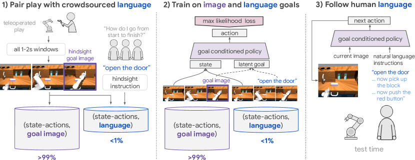
I 서론
모방 학습 [4, 3]은 로봇 자체 탑재 센서(onboard sensor)로부터 복잡한 로봇 기술을 습득하기 위한 대중적인 프레임워크이다. 전통적으로 모방 학습은 구조화되고 고립된 인간의 데모로부터 개별 기술을 학습하는 데 적용되어 왔다 [39, 1, 53].
이러한 수집 요구사항은 로봇이 다양한 기술을 자율적으로 수행할 수 있는 다재다능한 에이전트(generalist)가 될 것으로 기대되는 실제 환경 시나리오로 확장하기 어렵다. 이 환경에서 모방 학습을 배포하는 것을 고려할 때, 중요한 과제는 확장성이다. 새로운 기술을 학습하는 데 필요한 데이터 요구사항을 어떻게 줄일 수 있을까? 대신 대량의 비정형 및 라벨이 없는(unlabeled) 데모 데이터 [16, 26, 14]로부터 동시에 많은 기술을 학습하는 것이 가능할까?
최근 연구들은 비정형 데이터에 대한 다중 작업 모방 학습을 확장하는 데 초점을 맞추고 있다 [8, 26]. 그러나 이러한 접근법들은 대개 테스트 시점에 원-핫 작업 선택기(one-hot task selector) [37, 43], 목표 이미지 [29, 11, 26], 또는 상태 공간의 목표 구성 [14]과 같은 메커니즘을 통해 에이전트에게 작업이 지정된다고 가정한다. 이러한 유형의 조건화는 시뮬레이션에서는 제공하기 쉽지만, 열린 세계 환경에서는 제공하기가 실용적이지 않은 경우가 많다. 따라서 일상적인 환경에 모방 학습을 배포할 때 또 다른 중요한 고려 사항은 확장 가능한 작업 지정(task specification)이다. 훈련되지 않은 사용자가 어떻게 로봇의 행동을 지시할 수 있을까? 이는 자유 형식의 자연어 지시를 따를 수 있는 로봇의 필요성을 자극한다.
에이전트가 지시를 따르도록 학습시키는 것은 더 넓은 머신러닝 커뮤니티에서 활발히 연구되는 분야이지만 [25], 여전히 어려운 미해결 과제로 남아 있다. 기존의 접근법들은 신경망을 사용하여 관측과 언어 입력을 행동에 직접 매핑하는 에이전트를 학습시켰으나, 로봇 공학으로의 적용을 제한하는 가정을 하는 경우가 많다. 일반적인 연구들은 2D 관측 공간(예: 게임 [24, 32, 27, 12] 및 그리드월드 [52]), 단순화된 구동기(예: 이진 집기 및 놓기 기본 동작 [18, 48]), 또는 인위적으로 정의된 언어 [17, 6, 20, 54]를 수반한다.
본 연구에서는 인간의 언어로 조건화된 로봇 시각 조작(robotic visual manipulation) 환경을 연구한다 (그림 1, 3단계). 이 환경에서 단일 에이전트는 자유 형식의 자연어로 표현된 일련의 시각적 조작 작업을 연속으로 실행해야 한다. 예를 들어, “문을 오른쪽 끝까지 열고… 이제 블록을 잡고… 이제 빨간 버튼을 누르고… 이제 서랍을 열어”와 같다. 나아가, 이 시나리오의 에이전트는 임의의 순서로 임의의 하위 작업 조합을 수행할 수 있어야 한다. 우리가 아는 한, 이는 자연어 조건화, 고차원 픽셀 입력, 8자유도(8-DOF) 연속 제어, 그리고 장기 목표 로봇 물체 조작(long-horizon robotic object manipulation)과 같은 복잡한 작업을 결합한 최초의 지시 수행 버전이다. 텍스트 조건화는 목표 지향 모방 학습(goal-directed imitation learning) [26, 8]에 있어서도 새롭고 어려운 설정이며, 중요한 새로운 연구 질문들을 제기한다. 예를 들어, 가장 적은 언어 라벨을 사용하여 언어와 행동 간의 매핑을 어떻게 학습할 수 있을까? 언어 라벨이 없는 대규모 비정형 데모 데이터셋을 어떻게 활용할 수 있을까? 제한된 학습 세트가 주어졌을 때, 테스트 시점에 어떻게 최대 개수의 지시를 따를 수 있을까?
이러한 환경에 대처하기 위해, 우리는 모방 학습과 자유 형식 텍스트 조건화를 결합하는 간단한 접근법을 제안한다 (그림 1). 우리의 방법은 표준 지도 학습 서브루틴으로만 구성되며, 인지, 언어 이해, 제어를 단일 신경망으로 종단간 학습한다. 결정적으로, 지시 수행 분야의 기존 연구들과 달리, 우리의 방법은 대량의 비정형 및 라벨이 없는 데모 데이터(즉, 언어나 작업 라벨이 없는 데이터)를 활용할 수 있다. 우리는 이것이 언어 주석의 부담을 전체 데이터의 1% 미만으로 줄여줌을 보여준다. 테스트 시점에 에이전트가 따를 수 있는 지시의 최대량을 확장하기 위해, 우리는 임의의 언어 조건부 정책을 사전 학습된 대규모 언어 모델 [7, 36]과 결합하는 간단한 기법을 도입한다. 우리는 이 간단한 수정만으로도 에이전트가 각 동의어에 대한 새로운 로봇 데모를 수집할 필요 없이, 테스트 시점에 수천 개의 새로운 동의어 지시를 따를 수 있음을 발견했다. 라벨이 없는 데모로부터의 학습, 텍스트 조건부 시각-운동 정책의 종단간 학습, 그리고 새로운 로봇 데이터 없이 새로운 동의어 지시를 따르는 등 여기서 제안된 기능들이 확장 가능한 로봇 학습 시스템을 향한 중요한 단계가 될 것이라 믿는다.
우리는 고정된 물체 세트가 있는 동역학적으로 정확한 시뮬레이션 3D 테이블탑 환경에서 우리의 방법을 평가한다. 실험을 통해 우리의 방법으로 학습된 언어 조건부 시각-운동 정책이 완전히 자연어로 지정된 여러 복잡한 로봇 조작 기술을 연속으로 수행할 수 있으며(video 참조), 구조화된 데이터로 학습된 기존 모방 베이스라인보다 우수한 성능을 보임을 확인했다.
기여 본 연구의 기여를 요약하면 다음과 같다.
-
•
인간 언어 조건부 로봇 시각 조작 환경을 도입했다.
-
•
자유 형식 텍스트 조건화와 다중 작업 모방 학습을 결합하는 간단한 학습 방법을 도입했다.
-
•
임의의 맥락적 모방 학습(contextual imitation learning) 설정에 적용 가능한 다중 맥락 모방 학습(multicontext imitation learning)을 도입하여, 대부분 비정형이고 라벨이 없는 데모(즉, 작업이나 언어 라벨이 없는 데모)를 통해 언어 조건부 정책을 학습할 수 있도록 했다.
-
•
그 결과로 얻은 언어 조건부 시각-운동 정책이 시뮬레이션된 3D 테이블탑 환경에서 긴 시간 지평(long horizon)에 걸쳐 많은 자유 형식의 인간 텍스트 지시를 따를 수 있음을 입증했다. 예: “문을 열고… 이제 블록을 집어 올리고… 이제 빨간 버튼을 눌러” (비디오 참조).
-
•
임의의 언어 조건부 정책을 사전 학습된 대규모 언어 모델과 결합하는 간단한 방법을 도입했다. 우리는 이것이 조작 성능을 향상시키고, 각 동의어에 대한 새로운 데모를 요구하지 않으면서도 에이전트가 테스트 시점에 16개 언어로 된 수천 개의 새로운 동의어 지시에 대해 강인해질 수 있도록 함을 보여준다.
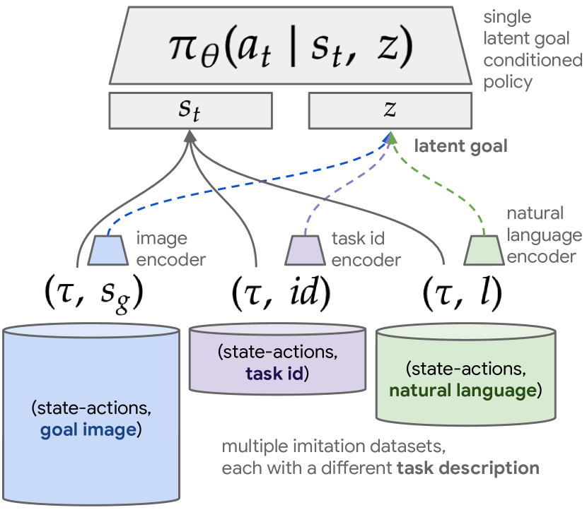
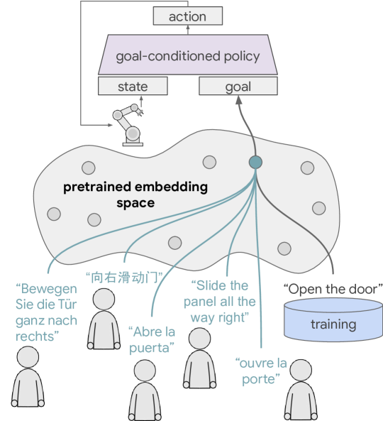
II 관련 연구 (Related Work)
일반 센서 기반의 로봇 러닝. 일반적으로 저수준 센서로부터 복잡한 로봇 기술을 학습하는 것은 가능하지만, 상당한 수준의 인간 감독이 필요하다. 흔히 사용되는 두 가지 접근법은 모방 학습(Imitation Learning, IL) [3]과 강화 학습(Reinforcement Learning, RL) [23]이다. 심층 함수 근사기(deep function approximator)와 결합할 때, IL은 일반적으로 정책의 지도 학습을 구동하기 위해 많은 인간 데모 [38, 37, 53]를 필요로 한다. RL에서 감독은 수작업으로 설계된 태스크 보상의 형태로 제공된다. 보상 설계는 복잡한 환경에서 까다로운 작업이며, 종종 태스크 전용 장비 [13]나 학습된 인지 보상 [41, 42]을 필요로 한다. 또한, RL 에이전트는 어려운 탐색 문제를 극복하기 위해 수작업으로 설계된 전략 [22, 9]이나 인간 데모 [38]을 필요로 하는 경우가 많다. 마지막으로, RL [46] 및 IL [37]의 다중 태스크 정식화 하에서도, 고려되는 새로운 태스크마다 그에 상응하는 상당한 규모의 인간 노력이 요구된다. 이로 인해 두 접근법 모두를 광범위한 태스크 환경으로 단순하게 확장하기가 어렵다. 본 연구에서는 모방 학습을 다중 태스크 및 언어 조건부로 확장하는 데 초점을 맞춘다. 역강화 학습 [30, 50, 10] 및 점유 매칭(occupancy matching) [19]과 같이 모방 학습을 수행하는 여러 방법이 존재하지만, 본 연구에서는 안정성과 사용 편의성을 고려하여 행동 복제(Behavior Cloning) [35]에 초점을 맞춘다.
대규모 비정형 데이터셋 기반의 모방 학습. 최근 연구들 [16, 26, 14]은 대규모 비정형 데모 데이터셋을 통해 한 번에 많은 기술을 학습함으로써 기존 다중 태스크 모방 학습의 비용을 완화하고자 했다. 이러한 연구들과 마찬가지로, 본 방법에서도 비정형 데모 데이터를 통합한다. 그러나 이러한 연구들과 달리, 본 연구의 결과물인 목표 조건부 정책은 자연어로 조건화될 수 있다.
태스크 무관 제어 (Task agnostic control). 본 논문은 단일 에이전트가 명령에 따라 환경 내의 임의의 도달 가능한 목표 상태에 도달하도록 학습되는 태스크 무관 제어 설정을 기반으로 한다 [21, 40]. 이러한 제어를 획득하는 한 가지 방법은 상호작용을 통해 환경 모델을 먼저 학습한 후 [31, 9] 이를 계획(planning)에 사용하는 것이다. 그러나 이러한 접근법은 시각적 역학(visual dynamics)의 정확한 순방향 모델에 의존하는데, 이는 여전히 어려운 미해결 과제이다. 태스크 무관 제어를 위한 강력한 모델 프리(model-free) 전략은 목표 재라벨링(goal relabeling) [21, 2]이다. 이 기술은 명령에 따라 이전에 방문한 임의의 상태에 도달하도록 목표 조건부 정책을 학습시키며, 최근 RL [29, 14, 28] 및 IL [26, 8] 분야에서 많은 사례가 존재한다. 재라벨링을 이미지 관측 공간과 결합하는 모델의 한계는 테스트 시점에 목표 이미지로 태스크를 지정해야 한다는 점이다. 본 연구는 재라벨링된 모방을 기반으로 하되, 추가적으로 정책에 자연어 조건화를 부여한다.
다중 컨텍스트 학습 (Multicontext learning). 기존의 여러 방법은 태스크 간 일반화 [5] 또는 목표 간 일반화 [40]에 초점을 맞추어 왔다. 우리는 이종 태스크 및 목표 설명 간의 일반화를 위한 프레임워크인 다중 컨텍스트 학습을 도입한다. 학습 소스 중 하나는 풍부하고 다른 하나는 부족할 때, 다중 컨텍스트 학습은 공유된 목표 공간을 통한 전이 학습(transfer learning) [45]으로 볼 수 있다. 다중 컨텍스트 모방은 인간의 언어 감독 비용을 실용적으로 적용 가능한 수준으로 낮춰주기 때문에 우리 방법의 핵심 구성 요소이다.
지시 수행 (Instruction following). 에이전트가 그라운디드 언어 이해(grounded language understanding) [49]를 학습할 뿐만 아니라 지시를 따름으로써 그 이해를 입증하도록 하는 연구는 오랜 역사를 가지고 있다(서베이 [25]). 최근 저자들은 원시 입력과 텍스트 지시사항을 행동에 직접 매핑하기 위해 딥러닝을 성공적으로 사용해 왔다. 그러나 이전 연구들은 종종 2D 환경 [24, 32, 27, 52]과 단순화된 액추에이터 [48, 18, 12]를 대상으로 연구를 진행했다. 또한, 자연어를 따르도록 학습하는 것은 여전히 지시 수행 연구에서 표준이 아니며 [25], 일반적인 구현체들은 대신 제한된 어휘와 문법에서 추출되어 시뮬레이터가 제공하는 지시사항에 접근할 수 있다고 가정한다 [17]. 반면, 본 연구는 1) 자연어 지시사항, 2) 고차원 연속형 센서 입력 및 액추에이터, 3) 장기 시계열(long-horizon) 3D 로봇 물체 조작과 같은 복잡한 태스크를 다룬다. 더욱이, 지시 수행에 대한 기존 RL 접근법 [18]과 달리, 우리의 IL 방법은 샘플 효율적이고 보상 정의가 필요 없으며 다중 태스크 설정으로 쉽게 확장된다. 로봇 지시 수행에 대한 동시기 IL 접근법 [44]이 라벨링된 태스크 데모 및 사전 학습된 물체 검출에 대한 접근을 가정하는 것과 달리, 우리의 방법은 비정형 및 라벨이 없는 데모 데이터로부터 학습하며, 단일 모방 손실을 통해 인지, 언어 이해 및 제어를 완전히 엔드투엔드로 학습한다.
III 문제 정의 (Problem Formulation)
우리는 현재 상태 와 단기 시계열 태스크를 설명하는 자유 형식의 자연어 에 조건화되어 다음 행동 을 출력하는 자연어 조건부 제어 정책 을 학습하는 문제를 고려한다. 여기서 는 실제 환경 상태가 아니라, 로봇의 고차원 온보드 관측값(예: )이다. 은 인간에 의해 제공되며 어휘나 문법에 제한이 없다.
테스트 시점에 인간은 로봇에게 한 번에 하나씩 일련의 지시사항 을 연속으로 제공한다. 언어 조건부 시각-운동(visuomotor) 정책 은 폐루프(closed loop)에서 고주파수 연속 제어를 실행하여 에 기술된 원하는 행동을 얻는다. 인간은 언제든지 에이전트에게 새로운 지시사항 을 제공하여 새로운 하위 태스크를 명령하거나 가이드(예: "손을 뒤로 약간 움직여라")를 제공할 수 있다.
표준 모방 학습 설정은 전문가 상태-행동 궤적 의 데이터셋 에 대해 지도 학습을 사용하여 단일 태스크 정책 을 학습한다. 우리의 문제 설정과 가장 유사한 것은 목표 조건부 모방 학습 [21]으로, 이는 대신 와 태스크 기술자 (종종 원-핫 태스크 인코딩 [37])에 조건화된 정책 을 학습하는 것을 목표로 한다. 태스크가 도달하고자 하는 목표 상태 로 기술될 수 있을 때, 수집 중에 방문한 임의의 상태는 "도달한 목표 상태"로 재라벨링(relabel) [21, 2, 8]될 수 있으며, 그 앞선 상태들과 행동들은 해당 목표에 도달하기 위한 최적의 행동으로 취급된다. 테스트 시점에 학습된 행동들은 목표 이미지 를 사용하여 조건화된다.
재라벨링된 모방 학습은 비정형 및 라벨이 없는 데모 데이터 [26]에 적용되어 범용적인 목표 도달 정책을 학습할 수 있다. 여기서 데모를 수행하는 사람은 미리 정의된 태스크 세트에 제한되지 않고, 장면 내에서 가능한 모든 물체 조작에 참여한다(see example). 이는 의미론적으로 유의미한 행동들이 분할되지 않은 하나의 긴 데모로 이어지며, 알고리즘 2를 사용하여 학습 세트 으로 재라벨링될 수 있다. 이러한 단기 시계열 목표 이미지 조건부 데모들은 최대 우도 목표 조건부 모방 목적 함수 에 입력된다.
그러나 언어 조건부 정책 을 학습할 때는 목표 공간 이 더 이상 관측 공간 과 동일하지 않기 때문에 방문한 임의의 상태 를 자연어 목표로 쉽게 재라벨링할 수 없다. 결과적으로, 이는 언어 조건부 모방 학습이 대규모 비정형 데모 데이터셋 을 통합하는 것을 제한한다.
다음으로, 이러한 제한을 완화하는 우리의 접근법을 설명한다.
IV 비정형 데이터로부터 인간의 지시를 따르는 법 학습하기
우리는 자기지도 재라벨링 모방 학습과 라벨링된 지시 수행의 확장 가능한 결합을 목표로 하는 프레임워크를 제시한다. 우리의 접근법(그림 1, 섹션 IV-C)은 다음과 같이 요약할 수 있다.
IV-A 비구조화된 시연 데이터와 자연어의 쌍 구축
언어 지시를 따르도록 학습시키는 것은 까다로운 언어 그라운딩(language grounding) 문제 [15]를 해결해야 한다. 즉, 에이전트가 비구조화된 언어 를 자체 탑재된 센서의 인지 및 행동 과 어떻게 연관시킬 것인가의 문제이다. 본 연구에서는 통계적 기계 학습 접근법을 취하여, 비구조화된 데이터 에서 추출한 무작위 윈도우를 사후에 사후 과잉 지시(hindsight instructions)와 쌍으로 묶음으로써 (시연, 언어)의 쌍으로 구성된 코퍼스를 생성한다 (Algorithm 3, Fig. 1의 1부). 여기서 훈련되지 않은 인간 어노테이터에게 탑재 카메라 비디오를 보여준 후, "첫 프레임에서 마지막 프레임으로 이동하기 위해 에이전트에게 어떤 지시를 내리겠습니까?"라고 질문한다. Table V의 학습 예시, 비디오 예시 here, 그리고 Appendix D-B의 수집 과정에 대한 전체 설명을 참조하라. 어노테이터들은 사전 정의된 어휘나 문법에 구애받지 않고 자유로운 형식의 자연어를 사용하도록 권장받았다. 이를 통해 텍스트 조건부 시연 데이터셋인 새로운 데이터셋 이 생성된다. 결정적으로, 지시를 따르는 법을 배우기 위해 놀이(play) 데이터의 모든 윈도우를 언어와 쌍으로 묶을 필요는 없다. 이는 다음에 설명할 다중 컨텍스트 모방 학습(Multicontext Imitation Learning) 덕분에 가능하다.
IV-B 다중 컨텍스트 모방 학습(Multicontext Imitation Learning)
지금까지 우리는 두 가지 컨텍스트 모방 데이터셋을 생성하는 방법을 설명했다. 즉, 목표 이미지 시연을 담고 있는 과 언어 시연을 담고 있는 이다. 이상적으로는, 어느 쪽의 작업 설명으로도 조건화될 수 있는 단일 모방 정책을 학습시킬 수 있을 것이다. 결정적으로, 이를 통해 언어 조건부 모방이 비구조화된 데이터에 대한 자기지도 모방을 활용할 수 있게 된다.
이러한 동기에서, 우리는 여러 이종 컨텍스트로 컨텍스트 모방을 단순하고 보편적으로 일반화한 다중 컨텍스트 모방 학습(multicontext imitation learning, MCIL)을 제안한다. 핵심 아이디어는 상태, 작업, 그리고 작업 설명에 대해 일반화하는 단일의 통합된 함수 근사기(function approximator)로 대규모 정책 집합을 표현하는 것이다. 구체적으로, MCIL은 작업을 설명하는 방식이 서로 다른 여러 컨텍스트 모방 데이터셋 에 접근할 수 있다고 가정한다. 각 은 특정 컨텍스트 와 쌍을 이루는 시연 을 포함한다. 예를 들어, 는 원-핫(one-hot) 작업 시연(전형적인 다중 작업 모방 데이터셋)을 포함할 수 있고, 는 목표 이미지 시연(사후 재라벨링을 통해 획득)을 포함할 수 있으며, 은 언어 목표 시연을 포함할 수 있다. MCIL은 모든 데이터셋에 대해 동시에 단일 잠재 목표(latent goal) 조건부 정책 을 학습시키는 동시에, 데이터셋당 하나의 매개변수화된 인코더 를 학습시켜 원시 작업 설명을 공통 잠재 목표 공간 으로 매핑하는 법을 배운다. Fig. 3을 참조하라. 예를 들어, 이들은 각각 원-핫 작업 임베딩 룩업, 이미지 인코더, 언어 인코더가 될 수 있다.
MCIL은 Algorithm 1에 제시된 바와 같이 간단한 학습 절차를 가진다. 각 학습 단계에서 각 데이터셋으로부터 컨텍스트 모방 예시 배치를 샘플링하고, 각 인코더를 사용하여 공유 잠재 공간에서 컨텍스트를 인코딩한 다음, 모든 데이터셋에 대해 평균을 낸 잠재 목표 조건부 모방 손실을 계산한다. 정책 및 목표 인코더는 이 목적 함수를 최대화하도록 엔드투엔드(end-to-end)로 학습된다.
MCIL은 본 논문을 넘어 광범위하게 유용한 매우 효율적인 학습 체계를 가능하게 한다. 즉, 수집 비용이 가장 저렴한 데이터 소스로부터 제어의 대부분을 학습하는 동시에, 소수의 라벨링된 예시로부터 확장 가능한 작업 조건화를 동시에 학습한다. 실험적으로 확인하겠지만, MCIL을 사용하면 언어 주석이 필요한 데이터가 1% 미만인 상태에서도 지시를 따르는 에이전트를 학습시킬 수 있으며, 인지 및 제어의 대부분은 재라벨링된 목표 이미지 모방을 통해 학습된다.
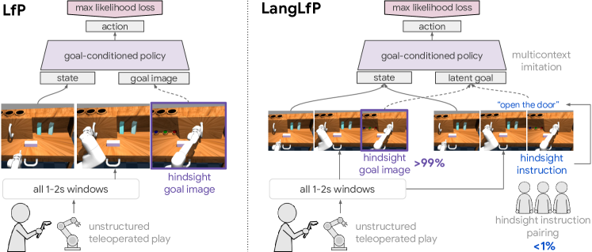
IV-C LangLfP: 이미지 또는 언어 목표 추종
이제 우리는 LangLfP(language conditioned learning from play, 언어 조건부 놀이 학습)를 소개하기 위한 모든 구성 요소를 갖추었다. LangLfP는 본 연구의 문제 설정에 적용된 MCIL(Sec. IV-B)의 특수한 사례로, 보조 손실 없이 픽셀로부터의 인지, 자연어 이해, 그리고 제어를 엔드투엔드로 학습한다.
LangLfP 학습. LangLfP는 데이터셋 에 대해 단일 다중 컨텍스트 정책 을 학습시킨다. 우리는 목표 이미지(Appendix B-B)와 텍스트 지시(Appendix B-C)로부터 각각 로 매핑하는 신경망 인코더 를 정의한다. Fig. 4은 LangLfP 학습과 기존 LfP 학습을 비교한다. 각 학습 단계에서 LangLfP는 1) 에서 이미지 목표 작업 배치를 샘플링하고 에서 언어 목표 작업 배치를 샘플링하며, 2) 이미지 및 언어 목표를 로 인코딩하고, 3) MCIL 목적 함수를 계산한다. 그런 다음 인지(Appendix B-A), 언어(Appendix B-C), 제어(Appendix B-D) 등 모든 모듈에 대해 결합된 경사 하강 단계를 수행하여 전체 아키텍처를 단일 신경망으로서 엔드투엔드로 최적화한다. 자세한 학습 세부 사항은 Appendix B-E을 참조하라.
테스트 시점에서의 자연어 지시 추종. 테스트 시점에 LangLfP는 탑재 카메라의 픽셀 관측값과 자유 형식의 자연어 작업 설명에만 조건화되어 폐루프(closed loop) 방식으로 사용자가 정의한 작업을 해결한다. Fig. 1의 3부에 있는 그림과 Appendix B-F의 세부 사항을 참조하라.
사전 학습된 언어 모델의 활용 LangLfP는 모방을 통해 자연어를 엔드투엔드로 학습하는 직관적인 방법을 제공하지만, 이것이 항상 바람직한 것은 아닐 수 있다. 열린 세계(open-world) 시나리오에서 지시를 따르는 로봇은 학습에 사용된 지시와 정확히 일치하지는 않지만 동의어인 지시를 받을 가능성이 높다. 예를 들어, "문을 닫아라(shut)"는 학습 작업인 "문을 닫아라(close)"를 설명하는 유효하지만 분포 외(out-of-distribution)일 수 있는 표현이다. 최근의 많은 연구들은 사전 학습된 임베딩 [7, 36]을 통해 라벨링되지 않은 텍스트로부터 다운스트림 NLP 작업으로 지식을 성공적으로 전이했다. 이러한 지식 전이를 로봇 조작(robotic manipulation)에도 적용할 수 있을까? 이러한 전이에는 두 가지 동기가 있다. 1) 언어 조건부 조작 성능을 향상시키는 것과 2) 에이전트가 분포 외의 동의어 지시를 따를 수 있도록 하는 것이다 (Fig. 3). 이러한 가설을 검증하기 위해, 우리는 학습 및 테스트 시점에 다국어 신경망 언어 모델 [51]의 사전 학습된 임베딩 공간에서 정책에 대한 언어 입력 을 인코딩하도록 LangLfP를 확장한다. 이 확장된 모델을 TransferLangLfP라고 부른다. 자세한 내용은 Appendix B-C를 참조하라.
V 실험
우리의 실험은 다음 질문들에 답하는 것을 목표로 한다: Q0) 본 논문의 방법으로 학습된 정책이 3D 테이블탑 환경에서 여러 자유 형식 텍스트 조건부 태스크를 해결하기 위해 인지, 자연어 이해, 제어를 엔드투엔드(end-to-end)로 학습할 수 있는가? Q1) 우리의 언어 조건부 다중 태스크 모방 학습(LangLfP)이 목표 이미지 조건부 모방 학습(LfP)의 성능과 일치할 수 있는가? Q2) 대규모 미라벨링 모방 데이터셋을 활용하는 우리 방법의 능력이 언어 조건부 성능을 향상시키는가? Q3) 사전 학습된 언어 모델을 통합하는 것이 조작 성능에 이점을 제공하는가? Q4) 사전 학습된 언어 모델을 통합하는 것이 우리 에이전트로 하여금 분포 외(out-of-distribution) 동의어 지시어에 대해 강인함을 갖게 하는가?
데이터셋 및 태스크. 우리는 [26]에서 소개되고 그림 10에 제시된 시뮬레이션된 3D 놀이방(Playroom) 환경에서 실험을 수행한다. 이 환경은 18개의 고유한 태스크 패밀리로부터 조작 태스크를 수행하기 위해 30Hz의 시각적 관측으로부터 연속적인 위치 제어로 제어되는 8자유도(8-DOF) 로봇 팔로 구성된다. 태스크에 대한 완전한 논의는 [26]를 참조하라. 우리는 에이전트가 매 타임스텝마다 관측하는 텍스트 채널을 포함하도록 환경을 수정하여, 사람이 제한 없는 언어 명령을 입력할 수 있도록 한다(자세한 내용은 부록 C 참조). 우리는 각 베이스라인에 대해 두 가지 실험 세트를 정의한다. 모델이 픽셀 관측을 수신하고 인지를 엔드투엔드로 학습해야 하는 픽셀 실험(pixel experiments)과, 모델이 대신 장면 내 모든 객체의 위치와 방향으로 구성된 시뮬레이터 상태를 수신하는 상태 실험(state experiments)이다. 후자는 까다로운 인지 문제(자기지도 표현 학습 방법(예: [41, 33, 34])으로 독립적으로 개선될 수 있음)와 무관하게, 다양한 방법들이 언어 조건부 제어를 얼마나 잘 학습할 수 있는지에 대한 상한선을 제공한다.
방법론. 우리는 다음 방법들을 비교한다(각 방법에 대한 자세한 내용은 부록 E 참조): LangBC ("언어는 사용하지만, 플레이는 없음"): 사후 지시어(hindsight instructions)와 쌍을 이루는 18개 평가 태스크 각각에 대한 100개의 전문가 데모 로 학습된 베이스라인 자연어 조건부 다중 태스크 모방 정책 [37]. LfP ("플레이는 사용하지만, 언어는 없음"): 테스트 시점에 목표 이미지에 조건화되는, 으로 학습된 베이스라인 LfP 모델. LangLfP (우리의 방법) ("플레이와 언어 모두 사용"): 비구조화된 데이터 및 언어와 쌍을 이룬 비구조화된 데이터 로 학습된 다중 컨텍스트 모방 학습. 태스크는 테스트 시점에 오직 자연어만을 사용하여 지정된다. Restricted LangLfP: 과 동일한 크기로 제한된 플레이 데이터셋인 "제한된 "으로 학습된 LangLfP. 동일한 시간 예산 내에서 세그먼트화되지 않은 플레이 데이터를 더 많이 수집할 수 있으므로, 이 제한은 다소 인위적이다. 이는 LangBC와의 통제된 비교를 제공한다. TransferLangLfP (우리의 방법): 사전 학습된 언어 임베딩 위에서 학습된 LangLfP. 통제된 비교를 수행하기 위해, 우리는 모든 베이스라인에 걸쳐 동일한 네트워크 아키텍처(자세한 내용은 8절 B 참조)를 사용한다. 모든 데이터 소스에 대한 자세한 설명은 부록 D를 참조하라.
V-A 인간 언어 조건부 시각적 조작
우리는 [26]의 기존 18개 평가 태스크를 하위 태스크로 취급한 다음, 이들 간의 모든 유효한 N-단계 전이를 고려하여 다수의 다단계 인간 언어 조건부 조작 태스크를 구성한다. 그 결과 2단계, 3단계, 4단계 벤치마크가 생성되며, 여기서는 각각 Chain-2, Chain-3, Chain-4로 지칭한다. 벤치마크에 대한 자세한 내용은 부록 F을 참조하라. 우리는 학습(2절 IV-A)과 동일한 방식으로 인간 어노테이터에게 완료된 태스크의 비디오를 보여주고 사후 지시어를 요청함으로써 각 하위 태스크에 대한 언어 지시어를 획득한다. 결과는 표 I과 그림 6에 제시하고 아래에서 논의한다.
| Method | Input |
|
|
|
|
|||||||||||
|---|---|---|---|---|---|---|---|---|---|---|---|---|---|---|---|---|
| LangBC | pixels | predefined demos | text | 20.0% | 7.1% | |||||||||||
| Restricted LangLfP | pixels | unstructured demos | text | 47.1% | 25.0% | |||||||||||
| LfP | pixels | unstructured demos | image | 66.4% | 53.0% | |||||||||||
| LangLfP (ours) | pixels | unstructured demos | text | 68.6% | 52.1% | |||||||||||
| TransferLangLfP (ours) | pixels | unstructured demos | text | 74.1% | 61.8% | |||||||||||
| LangBC | states | predefined demos | text | 38.5% | 13.9% | |||||||||||
| Restricted LangLfP | states | unstructured demos | text | 88.0% | 64.2% | |||||||||||
| LangLfP (ours) | states | unstructured demos | text | 88.5% | 63.2% | |||||||||||
| TransferLangLfP (ours) | states | unstructured demos | text | 90.5% | 71.8% |
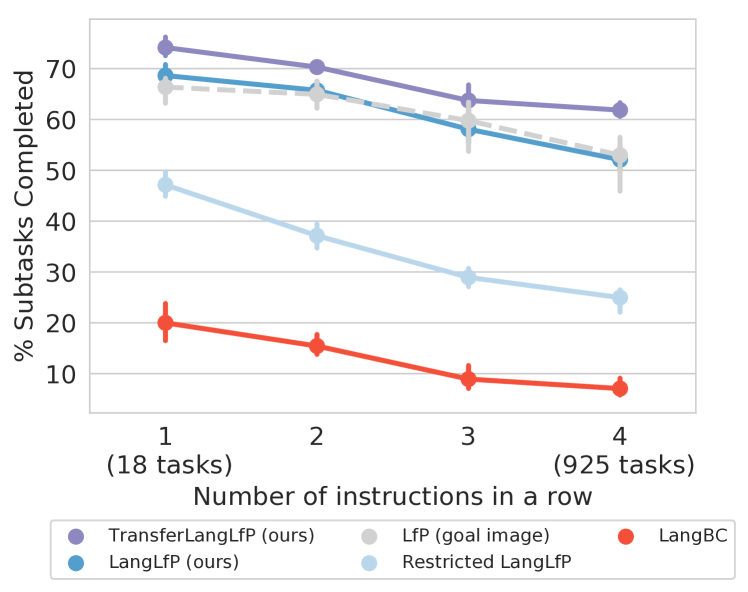
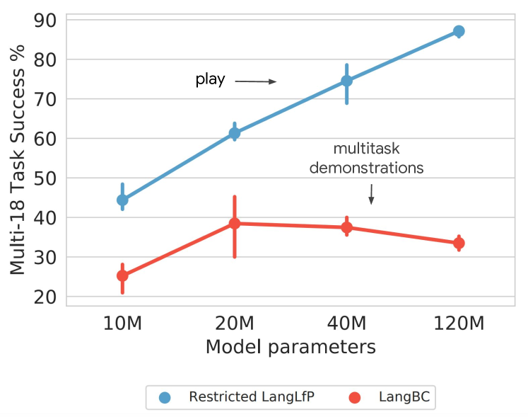
언어 조건부 조작 결과. 표 I에서 LangLfP가 개별 자유 형식 지시어(18개의 서로 다른 태스크 포함)에서 68.6%의 성공률을 달성하고, 925개의 4단계 지시어에서 52.1%의 성공률을 달성할 수 있음을 확인한다. 이는 본 연구의 첫 번째 주요 질문(Q0), 즉 우리의 접근 방식이 많은 자유 형식의 인간 지시어를 따르기 위해 인지, 제어 및 언어 이해를 엔드투엔드로 학습할 수 있는지에 대한 답을 제공하는 데 도움이 된다. 또한 LangLfP가 모든 벤치마크에서 오차 범위 내에서 기존 목표 이미지 조건부 LfP의 성능과 일치함을 확인한다(Q1). 이는 언어 주석이 필요한 데모 데이터가 단지 0.1%에 불과하더라도 더 확장 가능한 형태의 태스크 조건화를 달성할 수 있음을 보여주므로 중요하다.
대규모 미라벨링 모방 데이터셋이 언어 조건부 성능을 향상시킨다. 표 I과 그림 6에서 LangLfP가 모든 벤치마크에서 LangBC보다 우수한 성능을 보임을 확인한다. 이는 우리의 정책이 미라벨링 데모 데이터에 대해 학습할 수 있도록 함으로써(MCIL을 통해), 전형적인 사전 정의된 태스크 데모만으로 학습된 베이스라인 정책보다 훨씬 더 나은 성능을 달성함을 보여주기 때문에 중요하다(Q2). 우리는 미라벨링 학습 소스가 라벨링된 소스와 동일한 크기로 제한되는 경우에도 이 결과가 유지됨을 주목한다(Restricted LangLfP 대 LangBC). 정성적으로(videos), 우리는 비구조화된 데이터를 통합하는 모델과 그렇지 않은 모델 간의 명확한 차이를 확인한다. 장기 수평 평가에서 MCIL로 학습된 정책은 태스크 간 전이가 잘 이루어지고 초기 실패로부터 잘 복구되는 경향이 있는 반면, 전통적인 데모로 학습된 베이스라인 정책은 모방 오차가 빠르게 누적되는 경향이 있음을 발견했다.
고용량 모델이 미라벨링 데이터를 가장 잘 활용한다. 그림 6과 부록 G-B에서, 우리는 비구조화된 데이터를 활용하는 정책의 경우 모델 크기에 따라 성능이 선형적으로 확장되는 반면, 전통적인 사전 정의된 데모로 학습된 모델의 경우 성능이 정점에 도달한 후 감소하는 현상을 추가로 발견했다. 우리는 데이터셋이 동일한 크기로 제한되는 경우에도 이 현상이 유지됨을 확인한다. 이는 대규모 비구조화된 모방 데이터셋을 수집하고, 이를 소량의 언어 데이터와 쌍을 이룬 다음, 고용량 모방 학습 모델을 학습시키는 단순한 공식이 언어 조건부 제어를 확장하는 유효한 방법이 될 수 있음을 시사한다.
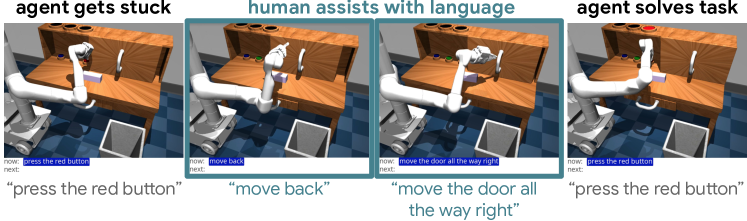
언어는 인간의 지원을 가능하게 한다. 자연어 조건화는 새로운 방식의 대화형 테스트 시간 행동을 가능하게 하여, 목표 이미지나 원핫(one-hot) 태스크 조건부 제어를 통해서는 제공하기 비현실적인 가이드를 인간이 에이전트에게 제공할 수 있도록 한다. 구체적인 예는 그림 7, this video 및 2절 G-C를 참조하라. 또한 3절 G은 인간이 "블록을 쓰레기통에 넣어라"와 같이 18개 태스크 벤치마크 외부에 있지만 학습 세트에는 포함되어 있는 태스크를 언어를 통해 어떻게 신속하게 구성할 수 있는지 보여준다.
V-B 사전 학습된 대규모 언어 모델을 활용한 지시어 수행
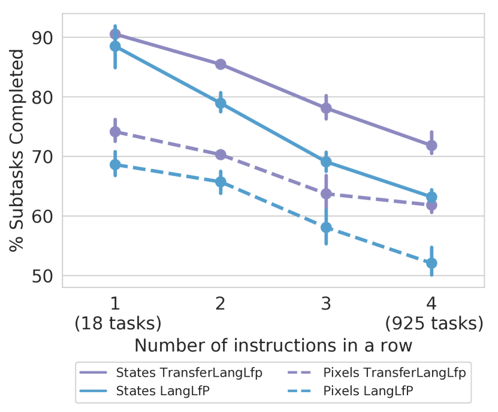
로봇 조작으로의 긍정적 전이. 표 I과 그림 8에서 TransferLangLfP가 LangLfP 및 LfP보다 일관되게 우수한 성능을 보임을 확인한다. 이는 우리가 아는 한, 사전 학습된 대규모 언어 모델에서 얻은 문장 임베딩이 언어 가이드 로봇 제어 정책의 수렴을 크게 향상시킬 수 있음을 보여주는 첫 번째 증거이다(Q3).
| Method |
|
|
||||
|---|---|---|---|---|---|---|
| Random Policy | 0.0% 0.0 | 0.0% 0.0 | ||||
| LangLfP | 37.6% 2.3 | 27.94% 3.5 | ||||
| TransferLangLfP | 60.2% 3.2 | 56.0% 1.4 |
분포 외 동의어 지시어에 대한 강인성. 표 II에서, 우리는 우리의 언어 조건부 정책이 학습 세트에 없는 동의어에 얼마나 강인한지 연구한다. 사전 학습된 대규모 언어 모델을 갖춘 에이전트(TransferLangLfP)만이 이러한 분포 외 동의어(OOD-syn)에 대해 강인함을 보여주며, 이는 Q4를 긍정적으로 뒷받침한다. 또한, 다국어 사전 학습 모델 [51]을 선택하는 것만으로도 이러한 강인성이 학습 어휘와 겹치지 않는 16개의 서로 다른 언어(OOD-16-lang)로 확장됨을 확인한다. 다국어 동의어 지시어를 따르는 TransferLangLfP의 비디오(link)를 참조하라. 우리는 이러한 실험이 학습에서 본 것과 다른 새로운 종류의 조작 태스크로 일반화하는 정책의 능력을 테스트하는 것이 아님을 강조한다. 오히려 이는 단순한 학습 수정을 통해 언어 가이드 에이전트가 학습 분포로부터 동일한 고정된 행동 세트를 실행하도록 조건화될 수 있는 방법의 수를 늘려, 실질적으로 학습 지시어 세트를 확장함을 보여준다. 이 실험에 대한 자세한 내용은 부록 G-D에서 확인할 수 있다.
V-C 한계점 및 향후 연구
비구조화된 놀이 데모 데이터의 커버리지가 기존 모방 학습 설정에서의 실패 모드를 완화해 주지만, 테스트 시점에 정책에서 몇 가지 한계점이 관찰된다. 이 video에서 정책이 작업을 해결하기 위해 여러 번 시도하지만 해결하기 전에 시간 초과가 발생하는 것을 볼 수 있다. 이 video에서는 에이전트가 로봇 팔이 어색한 구성으로 뒤집히는 일종의 복합 에러(compounding error)에 직면하는 것을 볼 수 있는데, 이는 원격 조작 놀이 중에 인간이라면 피했을 가능성이 높은 상황이다. 이는 더 안정적인 회전 표현(rotation representation)을 선택하거나 더 다양한 놀이 데이터를 수집함으로써 완화될 수 있다. 섹션 G-C에서 보여준 것처럼, 인간은 언어 지원을 사용하여 에이전트가 이러한 어색한 구성에서 벗어나도록 자유롭게 도울 수 있다. 실패의 더 많은 예시는 here에서 볼 수 있다. LangLfP는 작업 지정과 관련된 중요한 제약 조건을 완화하지만, 근본적으로 목표 지향적 모방 방법이며 자율적인 정책 개선 메커니즘이 부족하다. 향후 연구의 흥미로운 분야는 원격 조작 놀이의 커버리지, 다중 컨텍스트 모방 사전 학습의 확장성 및 유연성, 그리고 강화 학습의 자율적 개선을 결합하는 것일 수 있으며, 이는 이전의 성공적인 LfP와 RL의 결합 [14]과 유사하다. 또한, 본 연구의 범위는 고정된 객체 세트가 있는 단일 시뮬레이션 환경에서의 작업 불가지론적(task-agnostic) 제어이다. 이는 학습 및 테스트 작업이 동일한 분포에서 독립항등분포(i.i.d.)로 추출된다는 표준 모방 학습의 가정과 일치한다. 향후 연구를 위한 흥미로운 질문은 많은 방과 객체를 포함하는 대규모 놀이 코퍼스에서 학습하는 것이 보지 못한 방이나 객체로의 일반화를 가능하게 하는지 여부이다.
VI 결론
본 논문에서는 다중 작업 모방과 자유 형식 텍스트 조건화를 결합하기 위한 확장 가능한 프레임워크를 제안했다. 우리의 방법은 동적으로 정확한 3D 테이블탑 환경에서 긴 호라이즌에 걸쳐 여러 인간의 지시를 따를 수 있는 언어 조건화된 시각-운동 정책(visuomotor policy)을 학습할 수 있다. 우리 방법의 핵심은 비구조화되고 레이블이 지정되지 않은 모방 데이터로부터 학습하는 능력이며, 이는 다중 컨텍스트 모방 학습(Multicontext Imitation Learning)을 도입함으로써 가능해진 특성이다. 결정적으로, 비구조화된 데이터로부터 학습하는 능력은 언어 주석 비용을 전체 데이터의 1% 미만으로 줄이는 동시에, 훨씬 더 높은 언어 조건화 작업 성공률을 가져왔다. 마지막으로, 우리는 언어 조건화된 정책을 대규모 사전 학습된 언어 모델과 결합하는 간단하지만 효과적인 방법을 보여주었다. 이러한 작은 수정을 통해 추가적인 데모 데이터를 수집할 필요 없이, 우리의 정책이 분포 외(out-of-distribution) 동의어 지시어에 대해 견고해질 수 있음을 발견했다.
감사의 글
본 원고에 대해 유익한 피드백을 제공해 주신 Karol Hausman, Eric Jang, Mohi Khansari, Kanishka Rao, Jonathan Thompson, Luke Metz, Anelia Angelova, Sergey Levine, Vincent Vanhoucke께 감사드린다. 또한 쌍을 이루는 언어 지시를 제공해 준 어노테이터 분들께도 감사드린다.
References
- Akgun et al. [2012] Baris Akgun, Maya Cakmak, Karl Jiang, and Andrea L Thomaz. Keyframe-based learning from demonstration. International Journal of Social Robotics, 4(4):343–355, 2012.
- Andrychowicz et al. [2017] Marcin Andrychowicz, Filip Wolski, Alex Ray, Jonas Schneider, Rachel Fong, Peter Welinder, Bob McGrew, Josh Tobin, OpenAI Pieter Abbeel, and Wojciech Zaremba. Hindsight experience replay. In Advances in neural information processing systems, pages 5048–5058, 2017.
- Argall et al. [2009] Brenna D Argall, Sonia Chernova, Manuela Veloso, and Brett Browning. A survey of robot learning from demonstration. Robotics and autonomous systems, 57(5):469–483, 2009.
- Billard et al. [2008] Aude Billard, Sylvain Calinon, Ruediger Dillmann, and Stefan Schaal. Survey: Robot programming by demonstration. Technical report, Springrer, 2008.
- Caruana [1997] Rich Caruana. Multitask learning. Machine learning, 28(1):41–75, 1997.
- Chevalier-Boisvert et al. [2018] Maxime Chevalier-Boisvert, Dzmitry Bahdanau, Salem Lahlou, Lucas Willems, Chitwan Saharia, Thien Huu Nguyen, and Yoshua Bengio. Babyai: A platform to study the sample efficiency of grounded language learning. In International Conference on Learning Representations, 2018.
- Devlin et al. [2018] Jacob Devlin, Ming-Wei Chang, Kenton Lee, and Kristina Toutanova. Bert: Pre-training of deep bidirectional transformers for language understanding. arXiv preprint arXiv:1810.04805, 2018.
- Ding et al. [2019] Yiming Ding, Carlos Florensa, Pieter Abbeel, and Mariano Phielipp. Goal-conditioned imitation learning. In Advances in Neural Information Processing Systems, pages 15298–15309, 2019.
- Ebert et al. [2018] Frederik Ebert, Chelsea Finn, Sudeep Dasari, Annie Xie, Alex Lee, and Sergey Levine. Visual foresight: Model-based deep reinforcement learning for vision-based robotic control. arXiv preprint arXiv:1812.00568, 2018.
- Finn et al. [2016] Chelsea Finn, Sergey Levine, and Pieter Abbeel. Guided cost learning: Deep inverse optimal control via policy optimization. In International conference on machine learning, pages 49–58. PMLR, 2016.
- Florensa et al. [2019] Carlos Florensa, Jonas Degrave, Nicolas Heess, Jost Tobias Springenberg, and Martin Riedmiller. Self-supervised learning of image embedding for continuous control. arXiv preprint arXiv:1901.00943, 2019.
- Goyal et al. [2019] Prasoon Goyal, Scott Niekum, and Raymond J. Mooney. Using natural language for reward shaping in reinforcement learning, 2019.
- Gu et al. [2017] Shixiang Gu, Ethan Holly, Timothy Lillicrap, and Sergey Levine. Deep reinforcement learning for robotic manipulation with asynchronous off-policy updates. In 2017 IEEE international conference on robotics and automation (ICRA), pages 3389–3396. IEEE, 2017.
- Gupta et al. [2019] Abhishek Gupta, Vikash Kumar, Corey Lynch, Sergey Levine, and Karol Hausman. Relay policy learning: Solving long horizon tasks via imitation and reinforcement learning. Conference on Robot Learning (CoRL), 2019.
- Harnad [1990] Stevan Harnad. The symbol grounding problem. Physica D: Nonlinear Phenomena, 42(1-3):335–346, 1990.
- Hausman et al. [2017] Karol Hausman, Yevgen Chebotar, Stefan Schaal, Gaurav Sukhatme, and Joseph Lim. Multi-modal imitation learning from unstructured demonstrations using generative adversarial nets. arXiv preprint arXiv:1705.10479, 2017.
- Hermann et al. [2017] Karl Moritz Hermann, Felix Hill, Simon Green, Fumin Wang, Ryan Faulkner, Hubert Soyer, David Szepesvari, Wojciech Marian Czarnecki, Max Jaderberg, Denis Teplyashin, et al. Grounded language learning in a simulated 3d world. arXiv preprint arXiv:1706.06551, 2017.
- Hill et al. [2019] Felix Hill, Andrew Lampinen, Rosalia Schneider, Stephen Clark, Matthew Botvinick, James L McClelland, and Adam Santoro. Emergent systematic generalization in a situated agent. arXiv preprint arXiv:1910.00571, 2019.
- Ho and Ermon [2016] Jonathan Ho and Stefano Ermon. Generative adversarial imitation learning. arXiv preprint arXiv:1606.03476, 2016.
- Jiang et al. [2019] Yiding Jiang, Shixiang Gu, Kevin Murphy, and Chelsea Finn. Language as an abstraction for hierarchical deep reinforcement learning, 2019.
- Kaelbling [1993] Leslie Pack Kaelbling. Learning to achieve goals. In IJCAI, pages 1094–1099. Citeseer, 1993.
- Kalashnikov et al. [2018] Dmitry Kalashnikov, Alex Irpan, Peter Pastor, Julian Ibarz, Alexander Herzog, Eric Jang, Deirdre Quillen, Ethan Holly, Mrinal Kalakrishnan, Vincent Vanhoucke, et al. Qt-opt: Scalable deep reinforcement learning for vision-based robotic manipulation. arXiv preprint arXiv:1806.10293, 2018.
- Kober et al. [2013] Jens Kober, J Andrew Bagnell, and Jan Peters. Reinforcement learning in robotics: A survey. The International Journal of Robotics Research, 32(11):1238–1274, 2013.
- Kollar et al. [2010] Thomas Kollar, Stefanie Tellex, Deb Roy, and Nicholas Roy. Toward understanding natural language directions. In 2010 5th ACM/IEEE International Conference on Human-Robot Interaction (HRI), pages 259–266. IEEE, 2010.
- Luketina et al. [2019] Jelena Luketina, Nantas Nardelli, Gregory Farquhar, Jakob Foerster, Jacob Andreas, Edward Grefenstette, Shimon Whiteson, and Tim Rocktäschel. A survey of reinforcement learning informed by natural language. arXiv preprint arXiv:1906.03926, 2019.
- Lynch et al. [2019] Corey Lynch, Mohi Khansari, Ted Xiao, Vikash Kumar, Jonathan Tompson, Sergey Levine, and Pierre Sermanet. Learning latent plans from play. Conference on Robot Learning (CoRL), 2019. URL https://arxiv.org/abs/1903.01973.
- Misra et al. [2017] Dipendra Misra, John Langford, and Yoav Artzi. Mapping instructions and visual observations to actions with reinforcement learning. arXiv preprint arXiv:1704.08795, 2017.
- Nair et al. [2020] Ashvin Nair, Shikhar Bahl, Alexander Khazatsky, Vitchyr Pong, Glen Berseth, and Sergey Levine. Contextual imagined goals for self-supervised robotic learning. In Conference on Robot Learning, pages 530–539. PMLR, 2020.
- Nair et al. [2018] Ashvin V Nair, Vitchyr Pong, Murtaza Dalal, Shikhar Bahl, Steven Lin, and Sergey Levine. Visual reinforcement learning with imagined goals. In Advances in Neural Information Processing Systems, pages 9191–9200, 2018.
- Ng et al. [2000] Andrew Y Ng, Stuart J Russell, et al. Algorithms for inverse reinforcement learning. In Icml, volume 1, page 2, 2000.
- Oh et al. [2015] Junhyuk Oh, Xiaoxiao Guo, Honglak Lee, Richard L Lewis, and Satinder Singh. Action-conditional video prediction using deep networks in atari games. In Advances in neural information processing systems, pages 2863–2871, 2015.
- Oh et al. [2017] Junhyuk Oh, Satinder Singh, Honglak Lee, and Pushmeet Kohli. Zero-shot task generalization with multi-task deep reinforcement learning. In Proceedings of the 34th International Conference on Machine Learning-Volume 70, pages 2661–2670. JMLR. org, 2017.
- Ozair et al. [2019] Sherjil Ozair, Corey Lynch, Yoshua Bengio, Aaron Van den Oord, Sergey Levine, and Pierre Sermanet. Wasserstein dependency measure for representation learning. In Advances in Neural Information Processing Systems, pages 15578–15588, 2019.
- Pirk et al. [2019] Sören Pirk, Mohi Khansari, Yunfei Bai, Corey Lynch, and Pierre Sermanet. Online object representations with contrastive learning. arXiv preprint arXiv:1906.04312, 2019.
- Pomerleau [1991] Dean A Pomerleau. Efficient training of artificial neural networks for autonomous navigation. Neural computation, 3(1):88–97, 1991.
- Radford et al. [2019] Alec Radford, Jeffrey Wu, Rewon Child, David Luan, Dario Amodei, and Ilya Sutskever. Language models are unsupervised multitask learners. OpenAI Blog, 1(8):9, 2019.
- Rahmatizadeh et al. [2018] Rouhollah Rahmatizadeh, Pooya Abolghasemi, Ladislau Bölöni, and Sergey Levine. Vision-based multi-task manipulation for inexpensive robots using end-to-end learning from demonstration. In 2018 IEEE International Conference on Robotics and Automation (ICRA), pages 3758–3765. IEEE, 2018.
- Rajeswaran et al. [2017] Aravind Rajeswaran, Vikash Kumar, Abhishek Gupta, Giulia Vezzani, John Schulman, Emanuel Todorov, and Sergey Levine. Learning complex dexterous manipulation with deep reinforcement learning and demonstrations. arXiv preprint arXiv:1709.10087, 2017.
- Schaal [1999] Stefan Schaal. Is imitation learning the route to humanoid robots? Trends in cognitive sciences, 3(6):233–242, 1999.
- Schaul et al. [2015] Tom Schaul, Daniel Horgan, Karol Gregor, and David Silver. Universal value function approximators. In International conference on machine learning, pages 1312–1320, 2015.
- Sermanet et al. [2018] Pierre Sermanet, Corey Lynch, Yevgen Chebotar, Jasmine Hsu, Eric Jang, Stefan Schaal, and Sergey Levine. Time-contrastive networks: Self-supervised learning from video. Proceedings of International Conference in Robotics and Automation (ICRA), 2018. URL http://arxiv.org/abs/1704.06888.
- Singh et al. [2019] Avi Singh, Larry Yang, Kristian Hartikainen, Chelsea Finn, and Sergey Levine. End-to-end robotic reinforcement learning without reward engineering. arXiv preprint arXiv:1904.07854, 2019.
- Singh et al. [2020] Avi Singh, Eric Jang, Alexander Irpan, Daniel Kappler, Murtaza Dalal, Sergey Levine, Mohi Khansari, and Chelsea Finn. Scalable multi-task imitation learning with autonomous improvement. arXiv preprint arXiv:2003.02636, 2020.
- Stepputtis et al. [2020] Simon Stepputtis, Joseph Campbell, Mariano Phielipp, Stefan Lee, Chitta Baral, and Heni Ben Amor. Language-conditioned imitation learning for robot manipulation tasks. arXiv preprint arXiv:2010.12083, 2020.
- Tan et al. [2018] Chuanqi Tan, Fuchun Sun, Tao Kong, Wenchang Zhang, Chao Yang, and Chunfang Liu. A survey on deep transfer learning. In International conference on artificial neural networks, pages 270–279. Springer, 2018.
- Teh et al. [2017] Yee Teh, Victor Bapst, Wojciech M Czarnecki, John Quan, James Kirkpatrick, Raia Hadsell, Nicolas Heess, and Razvan Pascanu. Distral: Robust multitask reinforcement learning. In Advances in Neural Information Processing Systems, pages 4496–4506, 2017.
- Todorov et al. [2012] Emanuel Todorov, Tom Erez, and Yuval Tassa. Mujoco: A physics engine for model-based control. In IROS, pages 5026–5033. IEEE, 2012. ISBN 978-1-4673-1737-5. URL http://dblp.uni-trier.de/db/conf/iros/iros2012.html#TodorovET12.
- Wang et al. [2019] Xin Wang, Qiuyuan Huang, Asli Celikyilmaz, Jianfeng Gao, Dinghan Shen, Yuan-Fang Wang, William Yang Wang, and Lei Zhang. Reinforced cross-modal matching and self-supervised imitation learning for vision-language navigation. In Proceedings of the IEEE Conference on Computer Vision and Pattern Recognition, pages 6629–6638, 2019.
- Winograd [1972] Terry Winograd. Understanding natural language. Cognitive psychology, 3(1):1–191, 1972.
- Wulfmeier et al. [2015] Markus Wulfmeier, Peter Ondruska, and Ingmar Posner. Maximum entropy deep inverse reinforcement learning. arXiv preprint arXiv:1507.04888, 2015.
- Yang et al. [2019] Yinfei Yang, Daniel Cer, Amin Ahmad, Mandy Guo, Jax Law, Noah Constant, Gustavo Hernandez Abrego, Steve Yuan, Chris Tar, Yun-Hsuan Sung, et al. Multilingual universal sentence encoder for semantic retrieval. arXiv preprint arXiv:1907.04307, 2019.
- Yu et al. [2018] Haonan Yu, Haichao Zhang, and Wei Xu. Interactive grounded language acquisition and generalization in a 2d world. arXiv preprint arXiv:1802.01433, 2018.
- Zhang et al. [2018] Tianhao Zhang, Zoe McCarthy, Owen Jow, Dennis Lee, Xi Chen, Ken Goldberg, and Pieter Abbeel. Deep imitation learning for complex manipulation tasks from virtual reality teleoperation. In 2018 IEEE International Conference on Robotics and Automation (ICRA), pages 1–8. IEEE, 2018.
- Zhong et al. [2019] Victor Zhong, Tim Rocktäschel, and Edward Grefenstette. Rtfm: Generalising to novel environment dynamics via reading. arXiv preprint arXiv:1910.08210, 2019.
부록 A 알고리즘 의사코드
A-A 놀이 데이터 재레이블링
A-B 놀이 데이터와 언어의 쌍 구성
부록 B LangLfP 구현 세부 사항
아래에서는 인지, 자연어 이해 및 제어에 사용하는 네트워크를 설명한다. 이 네트워크들은 모두 다중 컨텍스트 모방 목적 함수를 최대화하기 위해 단일 신경망으로서 엔드투엔드(end-to-end)로 학습된다. 우리는 이것이 1) 재레이블링된 놀이, 2) 언어와 쌍을 이룬 놀이, 3) 다중 컨텍스트 모방을 결합하는 일반적인 고수준 프레임워크인 LangLfP의 여러 가능한 구현 중 하나일 뿐임을 강조한다.
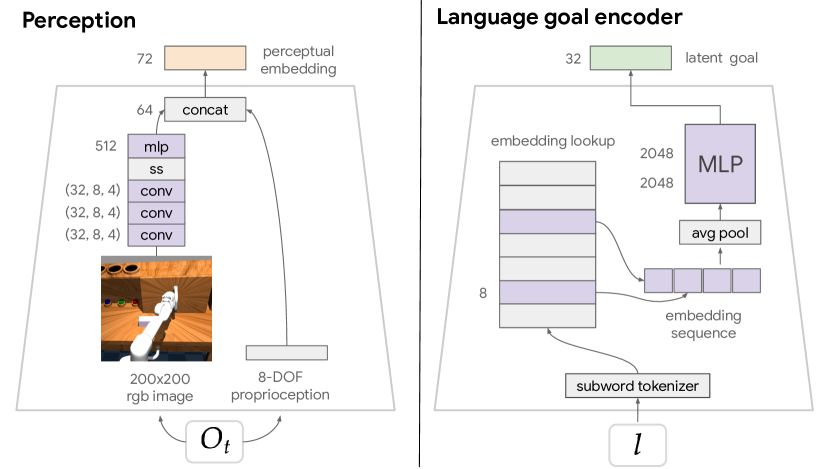
B-A 인지 모듈
우리는 원시 관측치(이미지 및 고유 감각 정보)를 네트워크의 나머지 부분에 입력되는 저차원 인지 임베딩으로 매핑한다. 이를 위해 그림 9에 설명된 인지 모듈을 사용한다. 이미지를 표 III에 설명된 네트워크에 통과시켜 64차원 시각 임베딩을 얻는다. 그런 다음 이를 고유 감각 관측치(학습 통계량을 사용하여 평균 0, 분산 1로 정규화됨)와 연결(concatenate)한다. 그 결과 크기 72의 결합된 인지 임베딩이 생성된다. 이 인지 모듈은 최종 모방 손실을 최대화하기 위해 엔드투엔드로 학습된다. 이미지 입력에 대해 광학적 증강(photometric augmentation)은 수행하지 않지만, 이를 수행하면 더 나은 성능을 얻을 수 있을 것으로 예상한다.
| Layer | Details |
|---|---|
| Input RGB Image | 200 x 200 x 3 |
| Conv2D | 32 filters, 8 x 8, stride 4 |
| Conv2D | 64 filters, 4 x 4, stride 2 |
| Conv2D | 64 filters, 3 x 3, stride 1 |
| Spatial softmax | |
| Flatten | |
| Fully connected | 512 hidden units, relu |
| Fully connected | 64 output units, linear |
B-B 이미지 목표 인코더
은 이미지 목표 관측치 을 입력으로 받아 잠재 목표 를 출력한다. 이를 구현하기 위해, 부록 B-A에 기술되어 있으며 를 으로 매핑하는 인지 모듈 을 재사용한다. 그런 다음 을 2개 레이어, 2048개 유닛의 ReLU MLP에 통과시켜 을 얻는다.
B-C 언어 이해 모듈 (Language understanding module)
처음부터 학습 (From scratch). LangLfP의 경우, 잠재 언어 목표 인코더인 은 그림 9에 기술되어 있다. 이는 다음과 같이 원시 텍스트를 목표 공간의 32차원 임베딩으로 매핑한다: 1) 서브워드 토큰화(subword tokenization)를 적용하고, 2) 룩업 테이블에서 학습된 8차원 서브워드 임베딩을 검색하며, 3) 서브워드 임베딩 시퀀스를 요약하고(이를 위해 평균 풀링과 RNN 메커니즘을 고려했으며, 검증 결과를 바탕으로 평균 풀링을 선택함), 4) 요약본을 2개 레이어, 2048개 유닛의 ReLU MLP에 통과시킨다. 분포 외(out-of-distribution) 서브워드는 테스트 시점에 무작위 임베딩으로 초기화된다.
전이 학습 (Transfer learning). 본 실험을 위해 [51]에 기술된 다국어 범용 문장 인코더(Multilingual Universal Sentence Encoder, MUSE)를 선택했다. MUSE는 일반적인 다국어 말뭉치(예: 위키피디아, 수집된 질문-답변 쌍 데이터셋)로 학습된 다중 작업 언어 아키텍처이며, 200,000개의 서브워드 어휘 사전을 가지고 있다. MUSE는 임의 길이의 문장을 512차원 벡터로 매핑한다. 우리는 이 임베딩을 단순히 언어 관측치로 취급하며 모델의 가중치를 미세 조정(finetune)하지 않는다. 이 벡터는 2개 레이어, 2048개 유닛의 ReLU MLP로 입력되어 잠재 목표 공간으로 투영된다.
원시 텍스트를 의미론적으로 사전 학습된 벡터 공간으로 인코딩하는 데는 많은 선택지가 존재한다. MUSE는 즉각적인 결과를 보여주어 우리가 문제 설정의 다른 부분에 집중할 수 있게 해주었다. 향후 다양한 사전 학습된 인코더를 실험해 볼 수 있기를 기대한다.
B-D 제어 모듈 (Control Module)
원칙적으로는 정책 을 구현하기 위해 어떤 목표 지향 모방 네트워크 아키텍처든 사용할 수 있다. 이전 연구와의 직접적인 비교를 위해, 이 네트워크를 구현하는 데 잠재 운동 계획(Latent Motor Plans, LMP) 아키텍처 Lynch et al. [26]을 사용한다. LMP는 잠재 변수를 사용하여 자유 형식 모방 데이터셋에 내재된 대량의 다중 모드성(multimodality)을 모델링한다. 구체적으로 이는 시퀀스 투 시퀀스 조건부 변분 오토인코더(seq2seq CVAE)로, 잠재 "계획(plan)" 공간을 통해 맥락적 시연(contextual demonstrations)을 오토인코딩한다. 디코더는 목표 및 잠재 계획 조건부 정책이다. CVAE로서 LMP는 최대 가능도 맥락적 모방()의 하한을 제공하며, 우리의 다중 맥락 설정에 쉽게 적응된다.
다중 맥락 LMP (Multicontext LMP). 여기서는 이미지 또는 언어 목표를 모두 입력받을 수 있도록 조정된 LMP인 "다중 맥락 LMP"를 설명한다. 이 모방 아키텍처는 추상적인 시각-언어 목표 공간 뿐만 아니라, 특정 목표에 도달하는 다양한 방법을 포착하는 계획 공간 을 모두 학습한다. 이제 이 구현을 자세히 설명한다.
조건부 seq2seq VAE로서, 기존 LMP는 3개의 네트워크를 학습시킨다. 1) 전체 상태-행동 시연 을 인식된 계획에 대한 분포로 매핑하는 사후 확률(posterior) . 2) 시연의 초기 상태와 목표를 목표 도달을 위한 가능한 계획의 분포로 매핑하는 학습된 사전 확률(prior) . 3) 목표에 도달하는 행동을 재구성하기 위해 교사 강요(teacher forcing)를 통해 인식된 계획을 디코딩하는 목표 및 계획 조건부 정책 . 자세한 내용은 [26]를 참조하라.
다중 맥락 LMP를 학습시키기 위해, 우리는 단순히 모든 곳에서 에 대한 목표 조건화를 다중 맥락 인코더 가 출력하는 잠재 목표인 에 대한 조건화로 대체한다. 본 실험에서 은 인코딩된 목표 이미지 를 32차원 잠재 목표 임베딩으로 매핑하는 2개 레이어, 2048개 유닛의 ReLU MLP이다. 는 섹션 B-C에 기술된 서브워드 임베딩 요약기이다. 달리 명시되지 않는 한, 본 논문의 LMP 구현은 [26]과 동일한 하이퍼파라미터 및 네트워크 아키텍처를 사용한다. 각각 RNN, MLP, RNN으로 구성된 사후 확률, 조건부 사전 확률 및 디코더 아키텍처에 대한 자세한 내용은 해당 논문의 부록을 참조하라.
B-E 학습 세부 사항 (Training Details)
각 학습 단계에서 우리는 이미지 목표와 언어 목표라는 두 가지 맥락적 모방 손실(contextual imitation losses)을 계산한다. 이미지 목표 순전파(forward pass)는 그림 16에 기술되어 있다. 언어 목표 순전파는 그림 17에 기술되어 있다. 두 단계 모두에서 인지 네트워크와 LMP 네트워크(사후 확률, 사전 확률, 정책)를 공유한다. 우리는 이미지 목표 및 언어 목표 패스에서 나온 미니배치 그래디언트를 평균화하고, 결합된 학습 목표를 최대화하기 위해 인지 네트워크, , , 사후 확률, 사전 확률, 정책 등 모든 것을 하나의 신경망으로서 종단간(end-to-end) 학습시킨다. 모든 학습 하이퍼파라미터는 표 IV에 기술되어 있다.
| Hyperparameter | Value |
|---|---|
| hardware configuration | 8 NVIDIA V100 GPUs |
| action distribution | discretized logistic, 256 bins per action dimension |
| optimizer | Adam |
| learning rate | 2e-4 |
| hindsight window low | 16 |
| hindsight window high | 32 |
| LMP | 0.01 |
| batch size (per GPU) | 64 sequences * padded max length 32 = 2048 frames |
| training time | 3 days |
B-F 테스트 시점 세부 사항 (Test time details)
테스트 에피소드가 시작될 때 에이전트는 온보드 관측치 과 사람이 지정한 자연어 목표 을 입력으로 받는다. 에이전트는 학습된 문장 인코더 를 사용하여 잠재 목표 공간 에서 를 인코딩한다. 그런 다음 에이전트는 폐루프(closed loop) 방식으로 목표를 해결하며, 현재 관측치와 목표를 학습된 정책 에 반복적으로 입력하고, 행동을 샘플링하여 환경에서 실행한다. 인간 작업자는 언제든지 새로운 언어 목표 을 입력할 수 있다.
부록 C 환경 (Environment)
우리는 동일한 관측 및 행동 공간을 유지하면서 [26]과 동일한 시뮬레이션된 3D 놀이터(playground) 환경을 사용한다. 완전성을 위해 아래에 이를 정의한다.
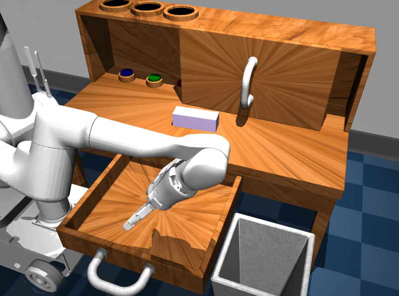
C-A 3D 시뮬레이션 환경
이 환경은 열고 닫을 수 있는 슬라이딩 도어와 서랍이 있는 책상을 포함한다. 책상 위에는 움직일 수 있는 직사각형 블록과 서로 다른 색상의 조명을 제어하기 위해 누를 수 있는 3개의 버튼이 있다. 책상 옆에는 쓰레기통이 있다. 물리 엔진은 MuJoCo 물리 엔진 [47]을 사용하여 시뮬레이션된다. 이 환경에서 수집된 플레이 데이터의 비디오 here는 가능한 복잡성에 대한 좋은 아이디어를 제공한다. 책상 앞에는 현실적으로 시뮬레이션된 8자유도(8-DOF) 로봇(로봇 팔 및 평행 그리퍼)이 있다. 에이전트는 에고센트릭(egocentric) 고차원 RGB 비디오 센서로부터 주변 환경을 인식한다. 추가적으로 에이전트는 엔드 이펙터(end effector)의 데카르트 좌표계(cartesian) 위치 및 회전, 그리고 그리퍼 각도를 전달하는 연속적인 내부 고유 감각(proprioceptive) 센서에 접근할 수 있다. 우리는 에이전트가 매 타임스텝마다 관찰하는 텍스트 채널을 포함하도록 환경을 수정하여, 사람이 제약 없는 언어 명령을 입력할 수 있도록 한다. 에이전트는 사용자가 설명한 조작 작업을 해결하기 위해 고주파수의 폐루프(closed-loop) 연속 제어를 수행해야 하며, 30hz로 로봇 팔에 연속적인 위치, 회전 및 그리퍼 명령을 전송한다.
C-B 관찰 공간
우리는 픽셀(pixel) 실험과 상태(state) 실험의 두 가지 유형의 실험을 고려한다. 픽셀 실험에서 관찰은 200x200x3 RGB 이미지와 8자유도 내부 고유 감각 상태의 (이미지, 고유 감각) 쌍으로 구성된다. 고유 감각 상태는 엔드 이펙터의 3D 데카르트 위치 및 3D 오일러(euler) 방향, 그리고 2개의 그리퍼 각도로 구성된다. 상태 실험에서 관찰은 8차원 고유 감각 상태, 움직일 수 있는 블록의 위치 및 오일러 각도 방향, 그리고 문이 열린 정도, 서랍이 열린 정도, 빨간색 버튼이 눌린 정도, 파란색 버튼이 눌린 정도, 초록색 버튼이 눌린 정도를 나타내는 연속적인 1차원 센서 값으로 구성된다. 두 실험 모두에서 에이전트는 추가적으로 매 타임스텝마다 자연어 텍스트 채널의 원시 문자열 값을 관찰한다.
C-C 행동 공간
우리는 [26]과 동일한 행동 공간을 사용한다: 엔드 이펙터의 8자유도 데카르트 위치, 오일러 각도, 그리퍼 각도. 이와 유사하게, 학습 중에 우리는 각 행동 요소를 256개의 빈(bin)으로 양자화한다. 모든 확률적 정책 출력은 양자화 빈에 대한 이산화된 로지스틱 분포(discretized logistic distributions)로 표현된다.
부록 D 데이터셋
D-A 플레이 데이터셋
우리는 모든 사후적(hindsight) 목표 이미지 조건부 학습의 기초로서 [26]에서 수집된 것과 동일한 플레이 로그를 사용한다. 이는 로 사후 재라벨링된 7시간 분량의 플레이 데이터로 구성되며, 각각 1~2초에 걸치는 1,000만 개의 단기 시간 영역 윈도우(short-horizon windows)를 포함한다.
D-B (플레이, 언어) 데이터셋
우리는 그림 11에 제시된 인터페이스를 사용하여 의 1만 개 윈도우를 사후적 자연어 지시문과 쌍을 지어 를 얻는다. 표 V에서 실제 예시를 참조하라. 수집된 언어는 길이와 내용 면에서 상당한 다양성을 가짐에 유의하라.
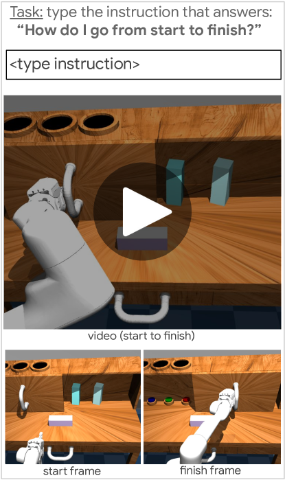
그림 11은 사후적 지시문이 어떻게 수집되는지 보여준다. 감독자들에게는 1~2초 분량의 플레이 비디오 클립이 반복 재생되는 웹페이지가 제공되며, 필요한 경우 클립의 시작과 끝을 식별하는 데 도움이 되도록 해당 비디오의 첫 프레임과 마지막 프레임이 함께 제공된다. 감독자들은 "시작 상태에서 완료 상태로 가려면 어떻게 해야 합니까?"라는 질문에 가장 잘 답하는 문장을 텍스트 상자에 입력하도록 요청받는다. 이 인터페이스를 설계할 때 몇 가지 사항을 고려할 수 있다. 첫째, 언어 데이터셋의 일반화 성능과 다양성을 높이기 위해 감독자들에게 서로 가능한 한 다른 여러 지시문을 입력하도록 요청할 수 있다. 단일 텍스트 상자와 다중 텍스트 상자를 실험해 본 결과, 우리는 단일 상자만 사용하되 수집 과정 전반에 걸쳐 사용자에게 가능한 한 다양한 문장을 작성하도록 요청하는 방식을 선택했다. 여러 상자를 두는 것의 단점은 관찰된 행동이 단순할 때 다양한 문장을 생각해 내는 것이 때때로 어려울 수 있다는 점이다. 또한 동일한 예산 대비 비디오-언어 쌍의 수가 적어지게 된다. 따라서 우리의 경우에는 비디오당 하나의 문장을 작성하는 것이 가장 유익하다고 결정했다. 또 다른 수집 고려 사항은 문장의 세부 묘사 수준이다. 예를 들어, 범용 로봇 애플리케이션의 경우 "서랍 손잡이 위로 손을 오른쪽으로 10cm 이동한 다음 서랍 손잡이를 잡고 서랍 손잡이를 당기십시오"보다는 "서랍을 여십시오"가 더 가능성 높은 사용 사례인 것으로 보인다. 이와 유사하게, 기능에 초점을 맞춘 지시문(예: "서랍을 여십시오")이 기능과 분리된 지시문(예: "서랍 손잡이 주변에 손가락을 대고 손을 뒤로 당기십시오")보다 더 유용할 가능성이 높다. 마지막으로, 비디오 클립의 시간적 길이를 고려할 때 하나의 클립 내에서 여러 일이 발생할 수 있다. 얼마나 많은 이벤트를 설명해야 할까? 예를 들어 "서랍을 닫은 다음 물체로 손을 뻗으십시오"와 같이 여러 동작을 설명하는 것이 중요할 수 있다. 이러한 모든 관찰을 염두에 두고, 우리는 감독자들에게 "내가 그 장면에 있다면 다른 사람에게 비슷한 비디오를 제작하도록 하기 위해 어떤 지시를 내릴 것인가?"라고 스스로에게 질문하면서 주요 행동만 설명하도록 안내했다.
|
| Task | Natural language instructions | ||||||
|---|---|---|---|---|---|---|---|
|
|
||||||
|
|
||||||
| open drawer |
|
||||||
| close drawer |
|
||||||
| grasp flat |
|
||||||
| grasp lift |
|
||||||
| grasp upright |
|
||||||
| knock |
|
||||||
| pull out shelf |
|
||||||
| put in shelf |
|
||||||
| push red |
|
||||||
| push green |
|
||||||
| push blue |
|
||||||
| rotate left |
|
||||||
| rotate right |
|
||||||
| sweep |
|
||||||
| sweep left |
|
||||||
| sweep right |
|
D-C (데모, 언어) 데이터셋
D-D 제한된 플레이 데이터셋
LangLfP와 LangBC 간의 통제된 비교를 위해, 우리는 종합 멀티태스크 데모 데이터셋과 동일한 크기(1.5시간)로 제한된 플레이 데이터셋에서 학습을 진행한다. 이는 리레이블링 전에 원래의 플레이 로그 7시간을 1.5시간으로 무작위 서브샘플링하여 얻은 것이다.
부록 E 모델
아래에서 우리의 다양한 베이스라인과 그 학습 데이터 소스를 설명한다. 통제된 비교를 위해, 모든 방법은 섹션 B에서 설명한 것과 정확히 동일한 아키텍처를 사용하여 학습되며, 오직 데이터 소스만 다르다는 점에 유의한다.
| Method | Training Data |
|---|---|
| LangBC | |
| LfP (goal image) | |
| LangLfP Restricted | restricted , |
| LangLfP (ours) | , |
| TransferLangLfP (ours) | , |
부록 F 장기 목표(Long Horizon) 평가
태스크 구성. 우리는 [26]에서 정의된 18개 서브태스크 간의 전환을 고려하여 장기 목표 평가를 구성한다. 이들은 문과 서랍을 열고 닫기, 버튼 누르기, 이동 가능한 블록을 집어서 놓기 등 다양하고 상이한 범주에 걸쳐 있다. 예를 들어, 925개의 Chain-4 태스크 중 하나는 "open_sliding, push_blue, open_drawer, sweep"이 될 수 있다. 우리는 "open_drawer, press_red, open_drawer"와 같이 필연적으로 이미 충족되었을 지시를 초래하는 모든 전환은 유효하지 않은 것으로 제외한다.
이 다단계 시나리오는 Lynch et al. [26]의 원래 Multi-18을 포함하며, 이는 단지 첫 번째 단계만 테스트하는 것으로 볼 수 있다. 이를 통해 이전 연구와의 직접적인 비교가 가능하다.
성공률은 3개의 시드(seed) 학습 실행에 대한 신뢰 구간과 함께 보고된다.
평가 진행 과정. 장기 목표 평가는 다음과 같이 진행된다. 주어진 벤치마크의 각 N-단계 태스크에 대해, 먼저 환경을 중립 상태로 재설정(reset)하는 것으로 시작한다. 이에 대해서는 다음 섹션에서 더 자세히 논의한다. 그 다음, 테스트 세트에서 N-단계 시퀀스의 각 태스크에 대한 자연어 지시어를 샘플링한다. 이어서, 한 줄로 나열된 각 서브태스크에 대해 에이전트에게 현재 서브태스크 지시어를 조건으로 제공하고 정책을 전개(rollout)한다. 임의의 타임스텝에서 에이전트가 현재 서브태스크를 성공적으로 완료하면(환경에서 정의된 보상에 따라), (0.5초의 지연 후) 시퀀스의 다음 서브태스크로 전환한다. 이는 인간이 차례대로 지시를 제공하고, 다음 지시를 대기열에 올려둔 다음, 인간이 현재 서브태스크가 해결되었다고 판단한 경우에만 지시를 입력하는 정성적인 시나리오를 모사하고자 한 것이다. 에이전트가 8초 이내에 주어진 서브태스크를 완료하지 못하면 전체 에피소드는 시간 초과로 종료된다. 우리는 완료된 서브태스크의 비율로 각 다단계 전개 점수를 매기며, 벤치마크의 모든 다단계 태스크에 대해 평균을 내어 최종 N-단계 수치에 도달한다.
멀티태스크 평가에서 중립적 시작 조건의 중요성. 맥락 조건부 정책(목표 이미지, 태스크 ID, 자연어 등)을 평가할 때 발생하는 자연스러운 질문은 다음과 같다: 정책이 태스크를 추론하고 해결하기 위해 맥락에 얼마나 의존하고 있는가? [26]에서 평가는 시뮬레이터를 테스트 데모의 첫 번째 상태로 재설정하는 것으로 시작하여 명령된 태스크가 유효함을 보장했다. 우리는 이러한 재설정 방식 하에서 에이전트의 초기 포즈가 일부 경우 태스크와 상관관계를 가질 수 있음을 발견했다. 예를 들어 서랍 열기 태스크의 경우 로봇 팔이 서랍 근처에서 시작하는 식이다. 이는 맥락이 아닌 초기 상태를 통해 정책에 태스크 정보를 잠재적으로 노출시킬 수 있으므로 문제가 된다.
본 연구에서는 대신 모든 테스트 에피소드가 시작될 때 로봇 팔을 고정된 중립 위치로 재설정한다. 이 "중립" 초기화 방식은 본 논문의 모든 평가를 수행하는 데 사용된다. 이는 더 공정하지만 훨씬 더 어려운 벤치마크이다. 중립 초기화는 초기 상태와 태스크 간의 상관관계를 깨뜨려 에이전트가 태스크를 추론하고 해결하기 위해 전적으로 언어에 의존하도록 강제한다. 완전성을 위해, 우리는 그림 12에서 이 방식과 이전의 "상관관계가 있을 수 있는" 초기화 방식 모두에서 LangLfP와 LangBC의 평가 곡선을 제시한다. LangBC가 데모의 정확한 첫 번째 상태에서 시작할 수 있을 때(엄격한 현실 세계 가정)는 첫 번째 태스크에서는 잘 수행하지만, 다른 태스크로 전환하는 데 실패하여 첫 번째 지시 이후 성능이 빠르게 저하됨을 볼 수 있다(Chain-2, Chain-3, Chain-4). 반면, 플레이로 학습된 LangLfP는 시작 위치의 변화에 훨씬 더 강인하여, 상관관계가 있는 초기화에서 중립 초기화로 전환할 때 성능 저하가 미미하게 발생한다.
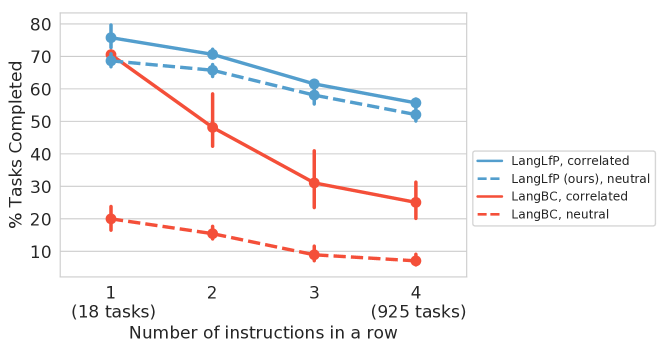
부록 G 정성적 예시
G-A 언어를 통한 새로운 태스크 조합
이 섹션에서는 LangLfP가 표준 18개 태스크 벤치마크에 포함되지 않은 어렵고 새로운 태스크를 제로샷(zero-shot)으로 달성할 수 있음을 보여준다. 그림 13에서 작업자는 테스트 시간에 태스크를 단순히 1) "물체를 집어 올린다", 2) "물체를 쓰레기통에 넣는다"라는 두 개의 텍스트 지시로 나누어 "물체를 쓰레기통에 넣기"라는 새로운 태스크를 조합할 수 있다. 그림 14에서도 마찬가지로 작업자가 에이전트에게 물체를 선반 위에 올려놓으라고 요청할 수 있음을 볼 수 있다. "선반 위에 놓기"와 "쓰레기통에 넣기" 모두 18개 태스크 벤치마크에 포함되어 있지 않다는 점에 유의한다.
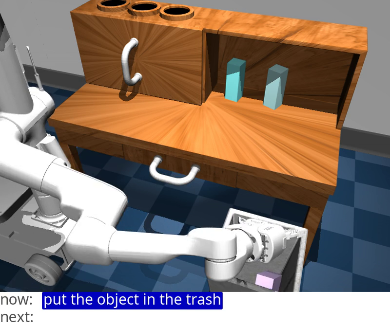
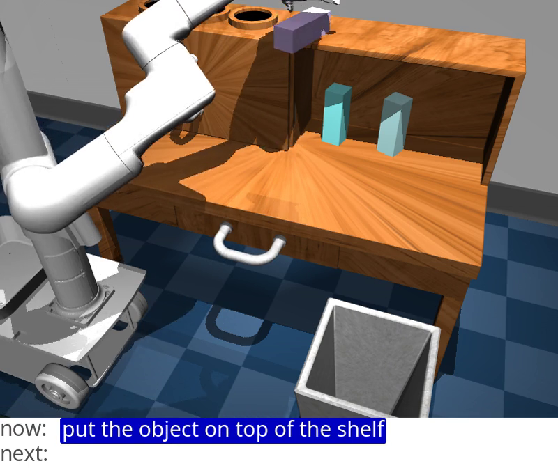
G-B 모델 용량에 따른 플레이 데이터의 확장성
그림 6에서는 플레이 데이터 또는 기존의 사전 정의된 데모로 학습된 모델에 대해 모델 크기의 함수로서 작업 성능을 고려한다. 공정한 비교를 위해, 동일한 양의 데이터로 학습된 Restricted LangLfP와 LangBC를 비교한다. 상한 성능을 파악하기 위해 상태(state) 입력을 사용하는 두 모델을 모두 연구한다. 플레이 데이터로 학습된 모델의 경우 모델 크기가 커짐에 따라 성능이 꾸준히 향상되지만, 사전 정의된 데모로 학습된 모델의 경우 성능이 정점에 도달한 후 하락하는 것을 볼 수 있다. 우리의 해석은 더 큰 용량이 플레이 데이터의 다양성을 흡수하는 데 효과적으로 활용되는 반면, 사전 정의된 행동으로 제한된 동일한 크기의 데이터셋에서는 추가적인 용량이 낭비된다는 것이다. 이는 대규모 플레이 데이터셋을 수집하고 모델 용량을 확장하여 더 높은 성능을 달성하는 단순한 방법이 유효함을 시사한다.
G-C 작업자가 로봇을 도울 수 있다
본 섹션에서는 로봇이 움직이지 못하게 되었을 때 인간 작업자가 지시사항을 조정하고, 초기 지시사항을 달성하기 위해 곤경에서 벗어나 상황을 해결할 수 있도록 추가적인 하위 단계를 추가하는 예를 보여준다. 그림 7에서 로봇은 빨간색 버튼을 누르러 가는 길에 말단 장치(end-effector)가 문에 걸리게 된다. 작업자는 명령을 뒤로 이동하는 것으로 변경한 다음, 빨간색 버튼에 더 잘 접근할 수 있도록 문을 오른쪽으로 더 열고, 그 후 빨간색 버튼을 누른다.
G-D 사전 학습된 언어 모델은 동의어 지시사항에 대한 강건성을 제공한다
분포 외(out of distribution) 동의어 지시사항에 대한 강건성. 제안된 전이 증강(transfer augmentation)이 에이전트로 하여금 분포 외 동의어를 따를 수 있게 하는지 연구하기 위해, Multi-18 평가 지시사항의 하나 이상의 단어를 학습 외 동의어로 대체한다. 예를 들어, “drag the block from the shelf”를 “retrieve the brick from the cupboard”로 대체한다. 이러한 대체는 학습 시점이 아닌 테스트 시점에만 발생함에 유의한다. 모든 대체를 나열하면 18개 작업 모두를 아우르는 14,609개의 분포 외 지시사항 세트가 생성된다. 이 벤치마크(OOD-syn)에서 무작위 정책, LangLfP, 그리고 TransferLangLfP를 평가하고 그 결과를 표 II에 보고한다. 성공률은 3개의 시드(seed) 학습 실행에 대한 신뢰 구간과 함께 보고된다. LangLfP는 문맥에서 의미를 추론하여 일부 새로운 작업을 해결할 수 있지만(예: 'pick up the block'과 'pick up the brick'은 자유롭게 움직이는 하나의 객체에 대해 동일한 작업으로 합리적으로 매핑될 수 있음), 성능이 크게 저하되는 것을 볼 수 있다. 반면, TransferLangLfP는 저하가 덜하다. 이는 우리가 보여주는 단순한 전이 학습 기법이 언어 안내 에이전트의 테스트 시점 적용 범위를 크게 확장함을 보여준다. 우리는 이 기법이 언어 안내 에이전트가 테스트 시점에 동일한 고정된 학습 행동 세트를 실행하도록 조건화될 수 있는 방법의 수만을 증가시킨다는 점을 강조한다.
16개 서로 다른 언어로 된 분포 외 지시사항 따르기. 여기서는 다국어 사전 학습 언어 모델을 선택하는 것만으로도 학습 중에 보지 못한 언어(예: 프랑스어, 중국어, 독일어 등)에 대해 추가적인 강건성을 얻을 수 있음을 보여준다. 이를 연구하기 위해, Multi-18의 기존 평가 지시사항 세트와 확장된 동의어 지시사항 세트 OOD-syn을 결합한 다음, Google 번역 API를 사용하여 두 세트를 16개 언어로 번역한다. 그 결과 18개 작업 모두를 아우르는 240k개의 분포 외 지시사항이 생성된다. 이 교차 언어 조작 벤치마크인 OOD-16-lang에서 이전 방법들을 평가하고 성공률을 표 II에 보고한다. LangLfP는 학습 시 겹치지 않는 지시사항을 받으면 최대 우도(maximum likelihood) 플레이 행동을 생성하는 데 의존하는 것을 볼 수 있다. 이로 인해 일부 우연한 작업 성공이 발생하지만, 성능은 실질적으로 저하된다. 반면, TransferLangLfP는 이러한 섭동(perturbation)에 훨씬 더 강건하여 영어 전용 벤치마크에 비해 약간만 저하된다. 16개의 새로운 언어로 된 지시사항을 따르는 TransferLangLfP의 videos를 참조한다. 본 논문에서는 모방 손실(imitation loss)로 사전 학습된 임베딩을 미세조정하지 않지만, 언어 임베딩을 체화된 모방(embodied imitation)에 접지(grounding)시키는 것이 텍스트 전용 입력에 비해 표현 학습을 향상시키는지 확인하는 것은 향후 연구를 위한 흥미로운 방향이 될 것이다.
부록 H 소제: 얼마나 많은 언어가 필요한가?
우리는 수집된 언어 쌍의 수에 따라 LangLfP의 성능이 어떻게 확장되는지 연구한다. 그림 15은 수집된 언어 쌍의 양을 2배씩 늘려가며 픽셀 입력으로 학습된 모델과 상태 입력으로 학습된 모델을 비교한다. 성공률은 3개의 시드 학습 실행에 대한 신뢰 구간과 함께 보고된다. 흥미롭게도, 상태로 학습된 모델의 경우 언어 데이터셋의 크기를 5k에서 10k로 두 배 늘려도 성능 향상이 미미하다. 반면, 픽셀로 학습된 모델은 아직 수렴하지 않았으며 더 큰 데이터셋의 이점을 얻을 수 있다. 이는 더 큰 언어 쌍 데이터셋의 역할이 주로 복잡한 지각적 접지(perceptual grounding) 문제를 해결하는 데 있음을 시사한다.
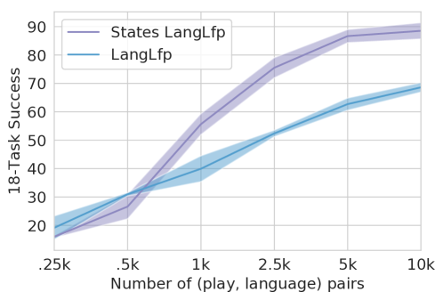
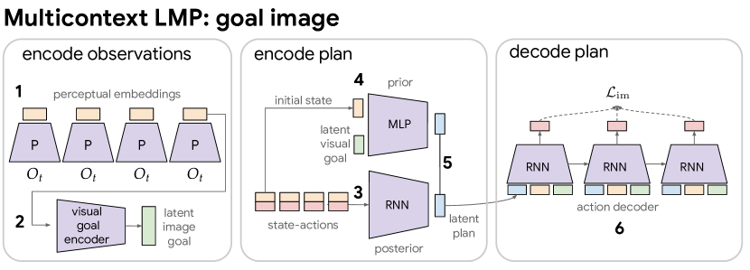
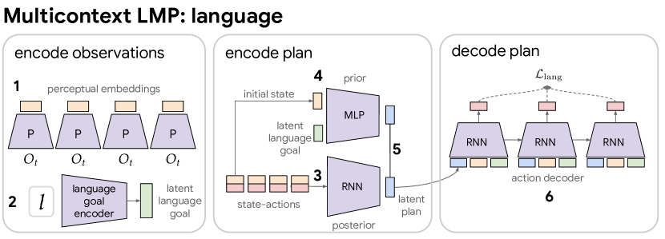